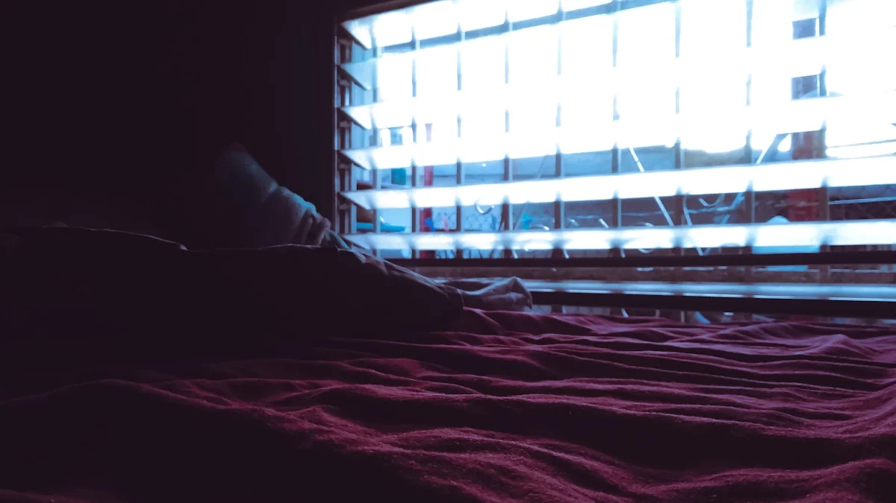
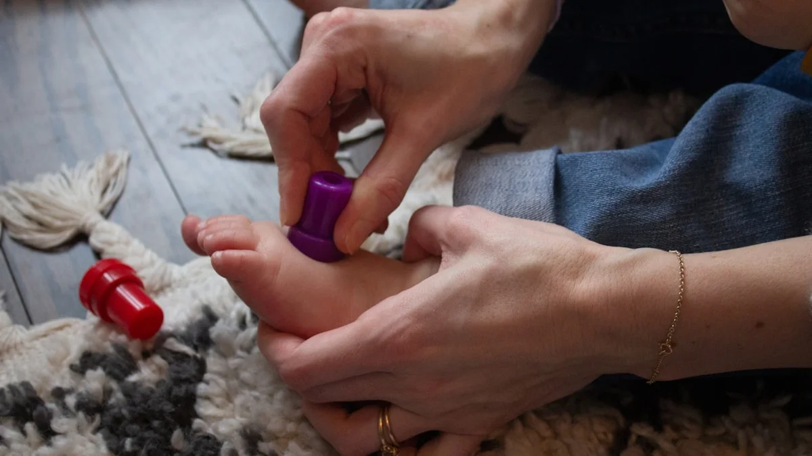

氷のように冷たい足先で眠れないあなたへ。自律神経を整え、芯からぬくもる東洋医学の「温活養生」
2026.06.24

「布団に入っても足先が氷のように冷たくて、いつまでも寝つけない」「夜中に何度も目が覚めてしまい、朝起きた瞬間からすでに体が重だるい……」。そんなつらい夜を過ごしていませんか？
手足の冷えや寝つきの悪さは、単なる「体質」ではありません。日中の緊張やストレスによって自律神経が乱れ、体が「戦闘モード」のまま夜を迎えてしまっているサインです。冷えと不眠が重なると、体内の疲労物質が排出されず、翌朝の慢性的な疲労感へとつながる悪循環に陥ってしまいます。今夜からその悪循環を断ち切り、心地よい温もりの中で深い眠りにつくための、医学的・東洋医学的なアプローチをご紹介します。
冷えと不眠をもたらす正体とは？医学と東洋医学のダブルアプローチで原因を紐解く
なぜ、これほどまでに手足が冷え、眠れなくなってしまうのでしょうか。その理由は、自律神経の乱れと、東洋医学でいう「気（き）・血（けつ）・水（すい）」の滞りにあります。
医学的な観点から見ると、私たちは日中、活動を支える「交感神経」が優位になっています。しかし、夜になっても仕事の緊張やスマートフォンの光などの刺激が続くと、リラックスを司る「副交感神経」へとスムーズに切り替わりません。交感神経が過剰に働いた状態が続くと、血管が収縮し、特に心臓から遠い末梢（手足の先）まで温かい血液が届かなくなります。これが、手先や足先が氷のように冷え切ってしまう物理的なメカニズムです。血液が届かないことで酸素や栄養が細胞に行き渡らず、疲労物質である乳酸などの老廃物が体内に蓄積し、慢性的なだるさを引き起こします。
東洋医学では、この状態を「血虚（けっきょ：血液や栄養の不足）」や「気滞（きたい：エネルギーの滞り）」、そして冷えの根本原因である「腎陽虚（じんようきょ：体を温めるエネルギーの不足）」と捉えます。血液（血）は全身に熱を運ぶアイロンのような役割を持っています。ストレスによって「気」の巡りが滞ると、連動して「血」の巡りも悪化し、熱が上半身にのぼって頭は冴えるのに、下半身は冷える「上熱下寒（じょうねつげかん）」の状態になります。これが「頭が冴えて眠れないのに、足は冷たい」という不快な症状の正体です。この悪循環を解消するには、自律神経のスイッチを意図的に切り替え、下半身の血流を物理的・経絡（けいろく）的に促進することが必要です。

今夜から無料でできる、身体を芯から温め睡眠へ導く「温活セルフケア」3選
明日から（あるいは今夜から）すぐに無料で実践できる、具体的な温活・睡眠セルフケアを3つご紹介します。
1. 「失眠（しつみん）」と「三陰交（さんいんこう）」の温圧ツボ押し
【手順】
まずは、足の裏のかかとの中央にある「失眠」というツボを、親指の腹を使って「痛気持ちいい」と感じる強さで5秒間押し、ゆっくり5秒かけて離します。これを5回繰り返します。
次に、内くるぶしの最も高いところから指幅4本分上、骨のキワにある「三陰交」を、息を吐きながら親指で斜め上に向かって3秒押し、3秒で離すのを10回行います。
【なぜ効くのか（根拠）】
失眠はその名の通り、失われた睡眠を取り戻すツボで、興奮した神経を落ち着かせる効果があります。三陰交は「肝・脾・腎」の3つの経絡が交わる重要なポイントで、骨盤内の血流を劇的に改善し、冷えを改善しながら体全体の水分代謝を整えることができます。お風呂上がりや布団に入る前に行うと、足先からじわじわと温まるのを実感できます。
2. 就寝30分前の「足首まわし」と「足の指ほぐし」
【手順】
床やベッドの上に座り、右足の太ももの上に左足を乗せます。左足の指の間に、右手の指を1本ずつしっかりと挟み込みます。そのまま、足首を外回りに10回、内回りに10回、ゆっくりと大きく回します。
回し終わったら、手の指で足の指を挟んだまま、足の裏側にグッと反らせるストレッチを5秒、逆に甲側に曲げるストレッチを5秒行います。左右の足を入れ替えて同様に行います。
【なぜ効くのか（根拠）】
足先は、心臓から最も遠く血液が滞りやすい場所です。特に足の指先には、東洋医学でいう経絡の始点・終点（井穴：せいけつ）が集中しています。指の間に手の指を挟んで刺激を与え、足首の大きな関節を回すことで、収縮していた末梢血管が拡張し、溜まっていた老廃物の排出が促進されます。これにより、足元の血液循環が一気に良くなり、体内の深部体温が手足から放熱されやすくなるため、自然な眠気が誘発されます。

3. 呼吸を連動させた「腹式・湧泉（ゆうせん）呼吸法」
【手順】
仰向けに寝て、両手を軽くお腹（おへその下数センチにある「丹田」）に当てます。まず、口から細く長く息を吐き出しながら、お腹をへこませていきます。このとき、足の裏の土踏まずのやや上、指を曲げたときに最も凹む場所にあるツボ「湧泉」から、体の中の不要な熱や疲れが息と一緒に抜けていくイメージを持ちます。
次に、鼻からゆっくりと息を吸い込みながらお腹を膨らませ、湧泉から大地の新鮮なエネルギー（気）を吸い上げるイメージをします。これを「5秒かけて吸い、10秒かけて吐く」ペースで、5分間繰り返します。
【なぜ効くのか（根拠）】
息を「吐く」時間を長くとる呼吸法は、自律神経の副交感神経を強力に優位にします。さらに、東洋医学で「生命力の源泉」とされる腎の経絡のスタート地点である「湧泉」を意識することで、気が下半身へと引き下ろされ、頭ののぼせが取れて足元が温まります。この呼吸を行っているうちに、自然と脳の緊張が解け、いつの間にか眠りへと誘われます。
実践のヒント
ツボ押しやストレッチを行う際は、「温まらなければ」「早く寝なければ」と焦る必要はありません。ご自身の呼吸の音に耳を傾け、「今日も一日、私の体を支えてくれてありがとう」と、足元に労いの言葉をかけるような気持ちで行うと、心身の緊張がさらに和らぎます。
自分の体をいたわり、「フクフク」とした夜を過ごすために
冷えや眠れない夜は、体があなたに送っている「少し立ち止まって、自分を労わって」という大切なサインです。今回ご紹介した「ツボ押し」「足首まわし」「腹式呼吸」は、すべて今日からお布団の中で行える簡単な養生法です。まずはどれか一つ、心地よいと感じるものから試してみてください。自分の体を丁寧にケアする時間は、心をフクフクとした幸福感で満たしてくれます。
けれど、どうしても忙しくてセルフケアの時間が取れない日や、疲れ果ててツボ押しをする気力すら湧かない夜もありますよね。
そんな時は、温活とリラックスの専門家である「fucuu（フクウ）」の100%天然・無添加の生薬入浴剤に頼るのも、賢く優しい選択肢です。お湯にポンと入れるだけで、厳選された生薬のチカラがじんわりと溶け出し、温浴効果を高めて芯から体を温めます。豊かな国産アロマの香りに包まれながら湯船に身を委ねる時間は、まさに植物のちからで「わたしに戻る」特別な時間。頑張る日々に、ほんの少しの温もりと「フクフク」とした安らぎを。fucuuは、あなたの毎日の養生を、お風呂からそっと支え続けます。
fucuuの生薬入浴剤・国産アロマは、BASEオンラインショップでご購入いただけます。
BASEで購入する